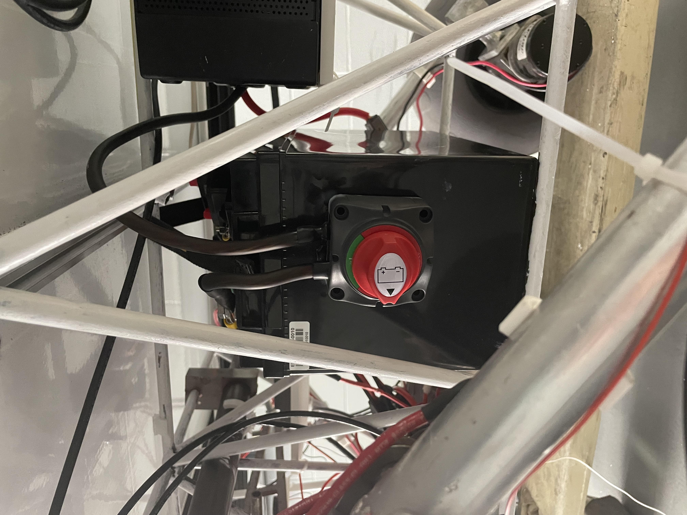
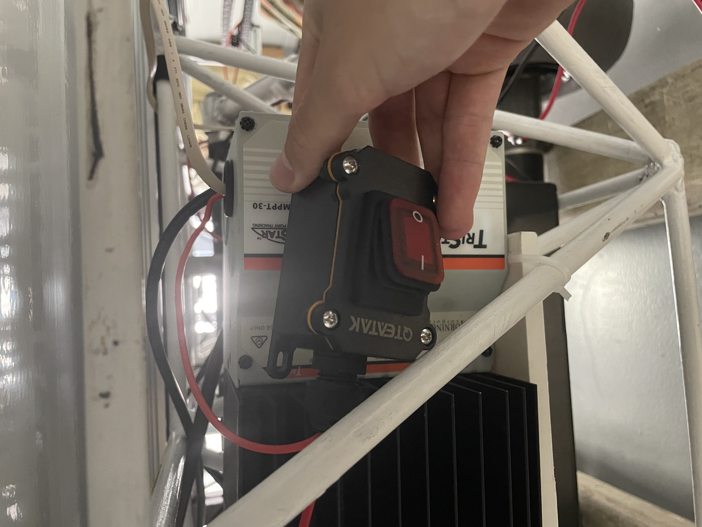
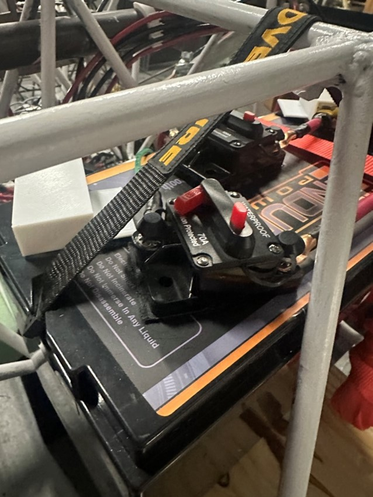
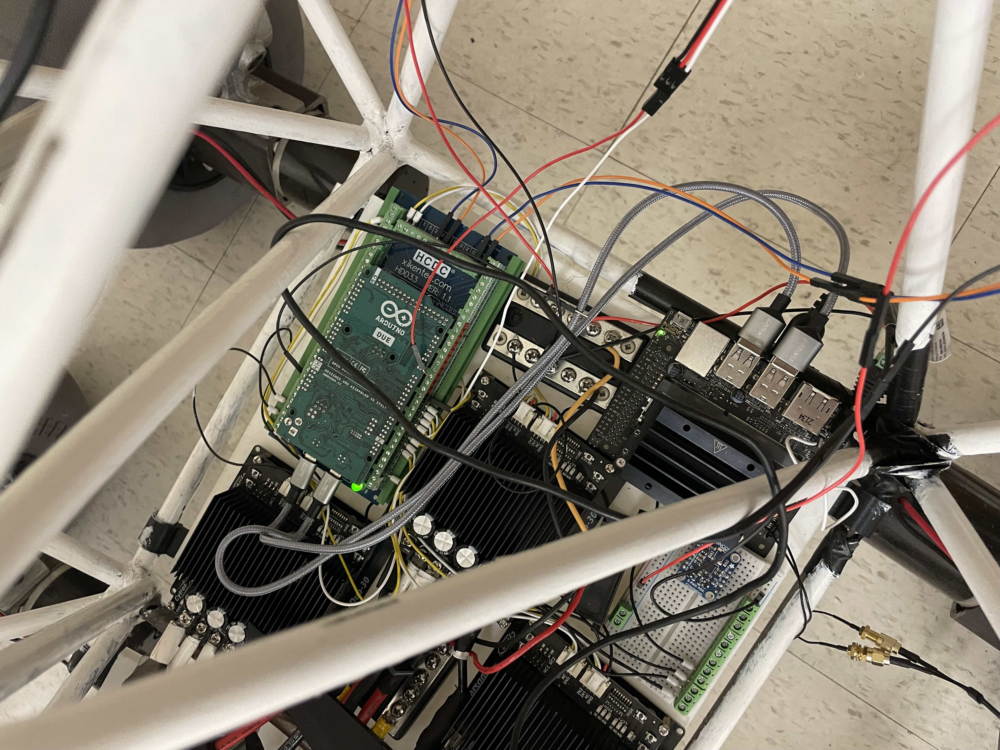
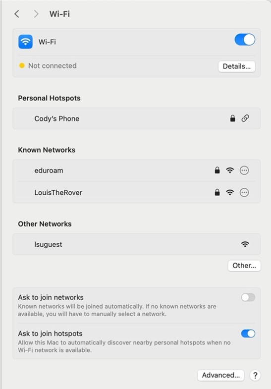
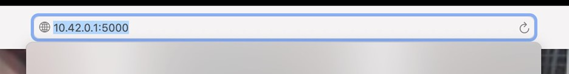
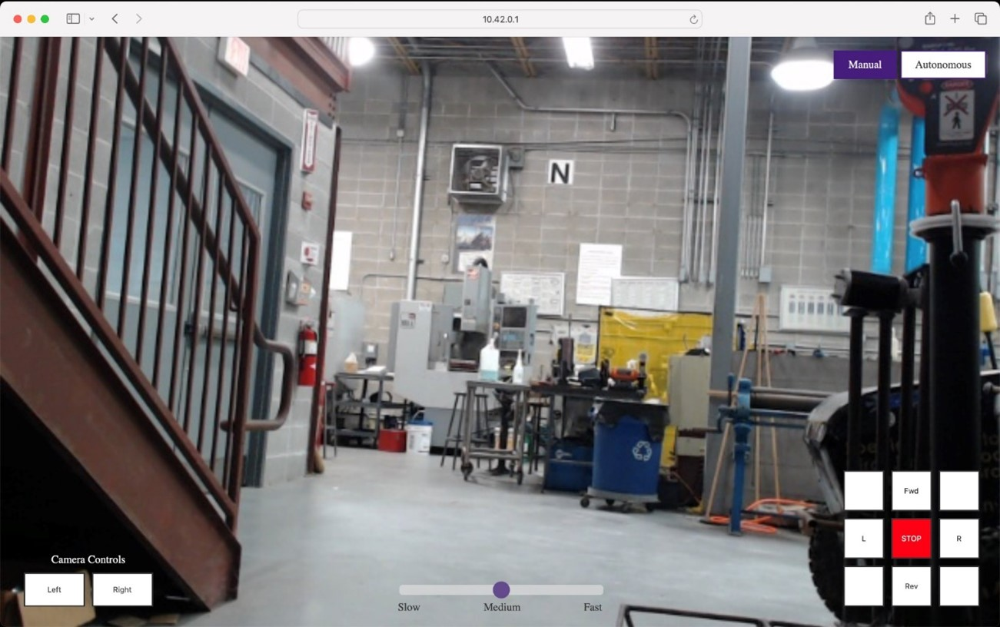
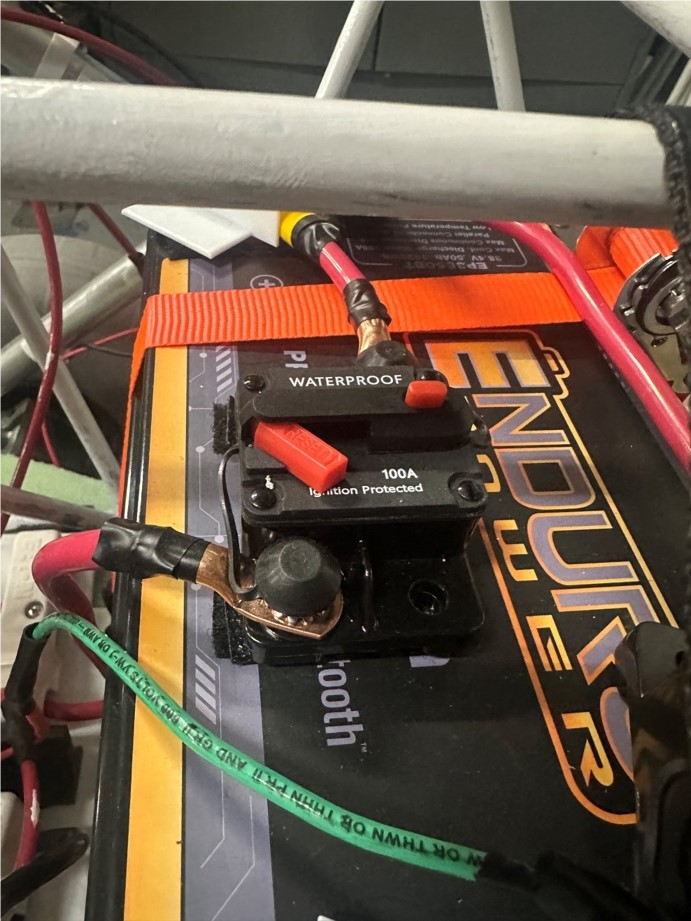
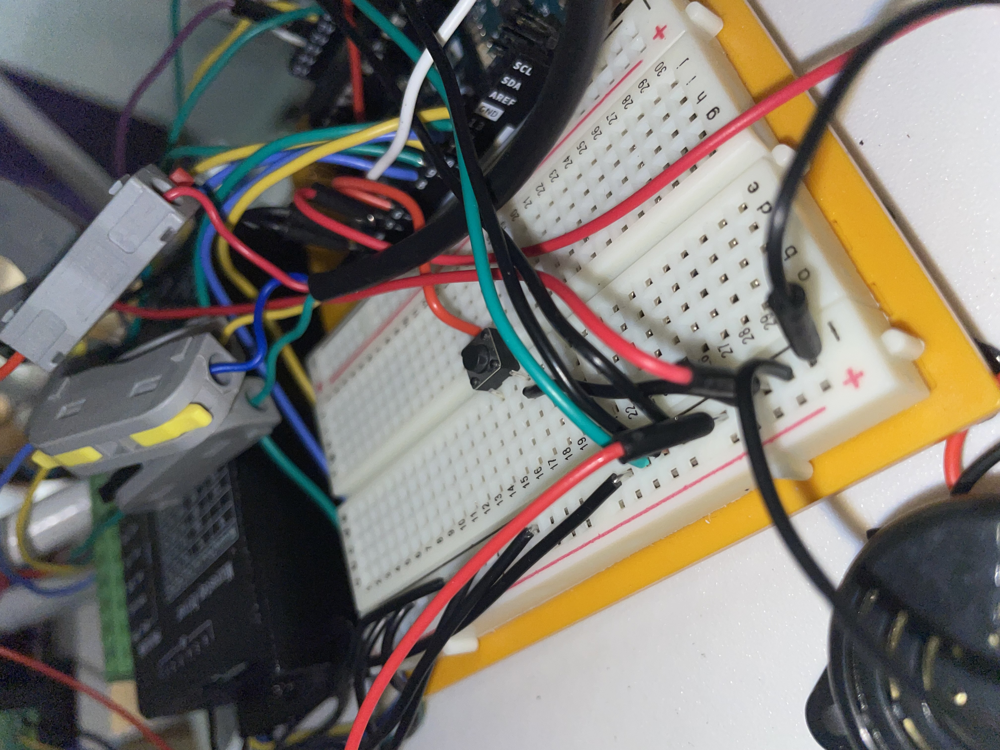

How to Turn on LOUIS
The following guide will help you operate and understand LOUIS.
Step 1: Turn on Battery Power for the Charge Controller Switch

On the side of the battery, there is a switch with a battery icon. Turn this on to start.
Step 2: Turn on the Rocker Switch for the Solar Panel

On the side of the charge controller, this is a rocker switch. Turn this on.
Step 3: Close the Circuit Breaker

On top of the battery, there are two switches. Turn on the switch with the green wire.
Step 4: Confirm the Arduino Due Light is On

Confirm the Arduino Due light is on to allow time for the entire circuit to be activated. Once the light is on, wait an additional 15-20 seconds before proceeding.
Step 5: Connect to LouisTheRover

On your controller device of choice, open the wi-fi settings, connect to LouisTheRover, and type in the password (Password:LouisLSU).
Step 6: Type in the IP Address

On your browser of choice, navigate to the IP address port 5000 of the Jetson Nano, which is 10.42.0.1:5000
Step 7: Confirm Live Camera Feed

You should see the controller GUI and have a live camera feed as shown.
Step 8: Toggle the Second Circuit Breaker

Then, you can toggle the second switch on the battery, and LOUIS is ready to control!
How to Operate the Cleaning System
There are two options for starting the cleaning system:
1. Autonomously
It will automatically begin when the pyranometer reads “sunny” conditions AND the solar panel’s voltage is under 58V.
2. Manually

There is a button on the arduino breadboard to manually activate the cleaning system. As soon as the button is pressed, you will have 5 seconds to step away from the rover to ensure safety.